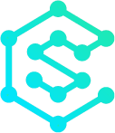

CyberSociety
We must request you orient your device to portrait or find a larger screen.
What are our goals?
- Encouraging students to join CS/IT field societies.
- Organising and participating in events.
- Developing group projects.
- Peer learning.
Benefits of joining CS/IT societies -
- Our university gets recognition in the technical community.
- To obtain further insight into the tech sector.
- To get a platform to publish our work.
Benefits of organising and participating in events -
- Represent university/club in various city/state/national level competitions.
- Organising quality tech events inside and outside the university.
- Improve management and technical skills.
- Platform for students to showcase their calibre.
Benefits of developing group projects -
- Members can approach other members if they face any obstacles during development.
- Members can try and develop projects that can be commercialized.
- It will build team spirit and members will always have something new to work on.
Benefits of peer learning -
- Students of any field can contact their fellow peer (seniors/juniors) to learn content.
- Students can approach their colleagues who have expertise in any extracurricular activity.
- Extending educational boundaries.
- A individual who excels in a particular topic can conduct a workshop for the rest of the club.
- An experienced person can provide guidance to a neophyte in the field.
- Home
- Events
- About
- Contact
- Gallery